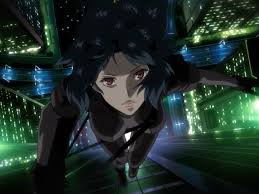

The Liberatory Image of the Cyborg
The Cyborg according to Donna Haraway, "is a cybernetic organism, a hybrid of machine and organism, a creature of social reality as well as a creature of fiction.... the bastard offspring of patriarchal culture-a kind of dissembled and reassembled, post- Modern collective and personal”. The image of the cyborg has been interrogated through media through the decades, expressing the need for further exploration. A prevalent question can be raised about the authenticity of the cyborg image in revolutionary politics, and whether it is liberatory.
“Ghost in the Shell” serves as a prime example of the exploration of the cyborg figure. The film is set in a futuristic cyberpunk world, where individuals integrate technology into their bodies, blurring the distinctions between organic and inorganic. The protagonist, Motoko Kusanagi, epitomizes the embodiment of Haraway’s cyborg. Kusanagi grapples with her own identity as a hybrid being, possessing a human brain but synthetic body.

The contestation of this image as revolutionary is brought up by many critical authors, who say that the image of the cyborg falls prey to masculinist ideals of the body. Author Carl Silvio explores this concept in “Refiguring the Radical Cyborg in Mamoru Oshii's Ghost in the Shell”. He writes, “Ghost in the Shell appears to offer something akin to this model by providing us with a fragmented female subject…” (Silvio 56). However, I believe that this line of thinking falls prey to masculine reduction of the character’s image. Kusanagi traverses the narrative of the female submissive by being forced to question her humanity in relation to the company she works for. The domination of the subject is something that Haraway closely examines in her work and becomes prevalent in the story.
The narrative in "Ghost in the Shell" extends beyond individual agency to encompass broader societal and political dimensions. The film explores themes of domination that Haraway strives to interrogate with her Cyborg image. She writes “… a slightly perverse shift of perspective might better enable us to contest for meanings, as well as for other forms of power and pleasure in technologically mediated societies. (Haraway 154). She categorizes the need for a new perspective on relational politics and argues that the image Cyborg can be the carrier of this change. In “Ghost in the Machine”, Kusanagi grapples with her identity as a cyborg to overcome the corruption she investigates. This serves to mirror real world politics; in which identity relates to one’s position within society. Haraway calls for the eradication of these binaries and dichotomies to overcome such placements. In “ghost in the Machine”, Major traverses her identity as a human and blurs the binary which allows for the narrative to traverse the domination of major powers in that reality.
In relation to domination and politics, the Cyborg serves as a liberatory affect and identity to emphasize individual agency and autonomy, encouraging individuals to actively shape their identities and experiences. This empowerment is revolutionary as it challenges structures of control and encourages self-determination in political thought, traversing political boundaries in place to subjugate domination over minority bodies.
In the intersection of domination, identity, and politics, the cyborg emerges as a revolutionary force. It serves as a powerful symbol, not only challenging established norms but also encouraging individuals to actively shape their identities and experiences. The Cyborg, while having problematic undertones, is an astound image of liberatory and revolutionary politics.
Silvio, C. (1999, March). Refiguring the radical cyborg in Mamoru Oshii’s. JSTOR. https://philosophy.as.uky.edu/sites/default/files/Refiguring%20the%20Radical%20Cyborg%20in%20Mamoru%20Oshii’s%20Ghost%20in%20the%20Shell%20-%20Carl%20Silvio.pdf